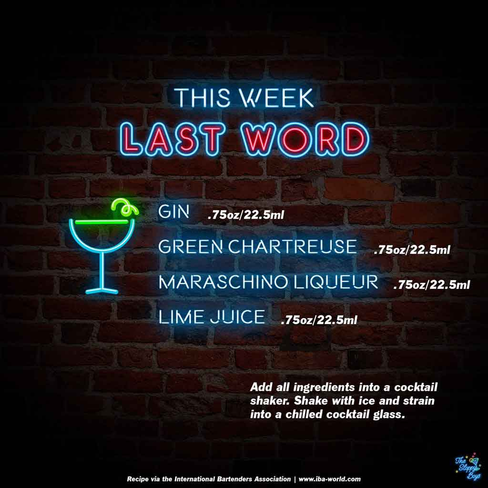

Sloppy Drinks
Podcast
About

Last Word
Ingredients
Gin (.75oz/22.5ml)
Green Chartreuse (.75oz/22.5ml)
Maraschino Liqueur (.75oz/22.5ml)
Lime Juice (.75oz/22.5ml)
Steps
Add all ingredients into a cocktail shaker.
Shake with ice and strain into a chilled cocktail glass.
Notes
Episode 91 - Last Word (July 15, 2022)
IBA Last Word Recipe
Artwork by The Sloppy Boys